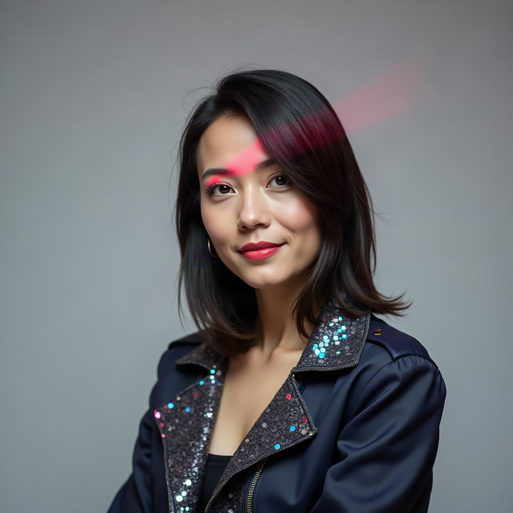

Cloture — the motion that cuts off debate. HackBarna AI Summit 26 ·
persona stills in assets/persona/
Decided. Vitaly picked candidate chair-03. She is
Karen. It is the still she presents in her participant tile; her live board
is a screen share from that tile, so this is the only image of her.
Two personas share the face and differ in behaviour:
formal Karen (precise, a little passive-aggressive, states time and
agenda facts) and funky Karen (funny, warm, enjoyable). Switch with
CHAIR_PERSONA=formal|funky.
assets/persona/karen-formal.png · was chair-03
fal-ai/flux/schnell, 1024×1024. Front-facing, direct eye contact, neutral background, mouth unobstructed — reads as a person in a small tile.
Batch 2 — the regeneration worked. Strength raised and the funky
elements moved ahead of the identity clause, so the wardrobe and the background now
actually change. Batch 1 (three near-identical black blazers) is gone from this page;
the failure is recorded in assets/persona/PROMPTS.md.
Your pick. helm's read is below each card — 01 is the only one that clears every gate. Say the number and the service points at it.
floral blazer · orange striped tee · tortoiseshell glasses
Same woman as formal Karen, unmistakably a different character. Front-facing, mouth fully visible and unobstructed, plain background, no text. Reads at four metres. The one to use unless you want something louder.

sequinned jacket · magenta rim light
A red laser streak crosses the eyebrow and hair — a generation artifact, not styling, and it sits across the face. Also a three-quarter turn rather than front-facing.
mustard cardigan · pencil in bun · sticky-note wall
Best styling of the three and the wrong face — different bone structure, not Karen. The sticky-note wall also carries written text, which the checklist rules out.